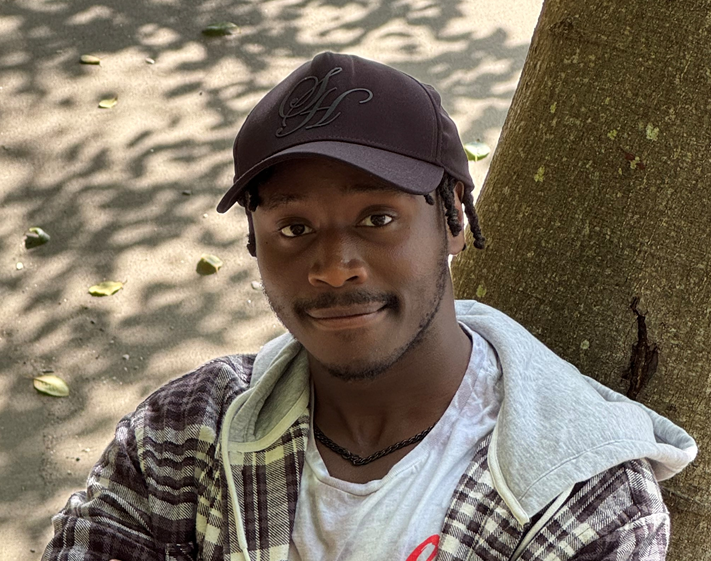

Shawn Nguru
206-319-8744
shawnguru003@gmail.com
linkedin.com/in/shawn-nguru-215412346
https://github.com/ShawnN003

Education
Green River College -Auburn, WA
Associate of Arts Degree (2021), Bachelor of Software Development (expected June 2026)
Major: Software Development (Applied Computer Science)
Skills and Certifications
- Languages: Java, C++, SQL, Python, HTML, CSS, JavaScript.
- Analytical Decision Making
- Web: HTML/CSS, Bootstrap, JSON
Experience
FedEx Express -SeaTac, WA
Material Handler
- Teamwork and Coordination
- Problem Solving Skills
- Attention to detail
- Communication
Achievements and Activities
- President of Rotaract Club (2020)
- Organizing Community Service Events
- Cornerstone Church Intern (2021)